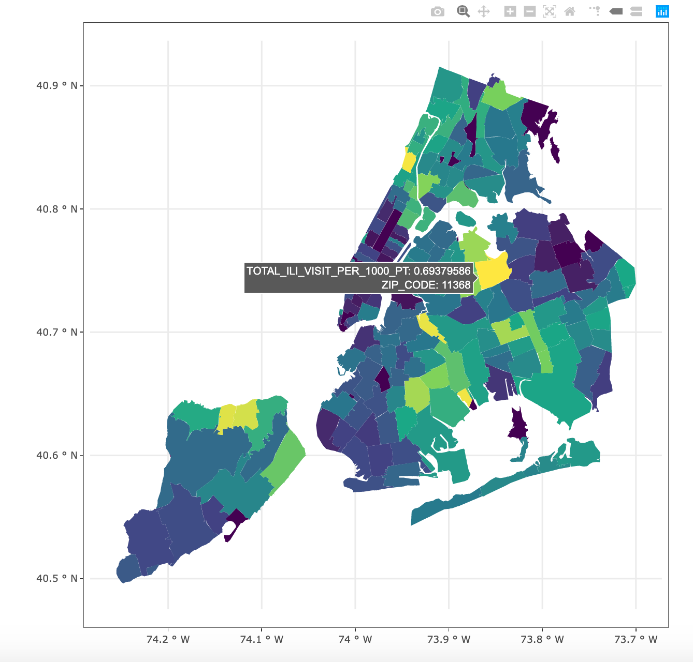
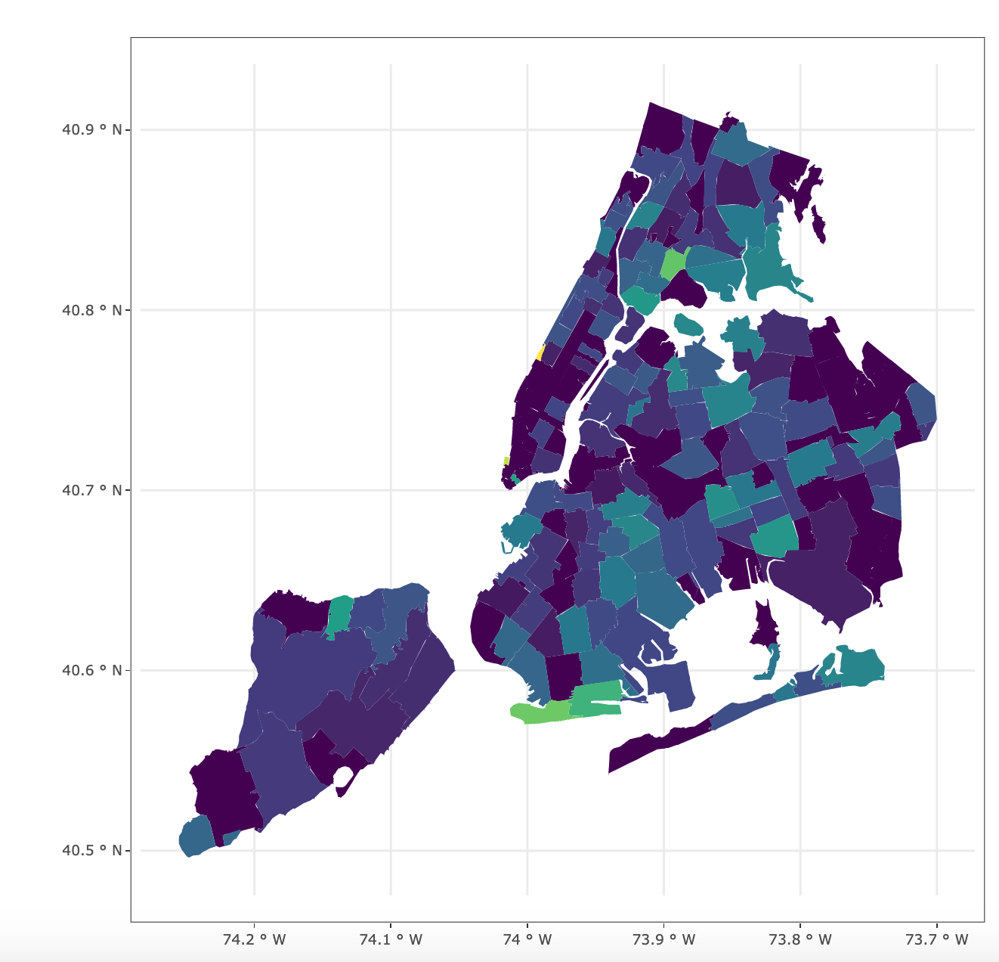

Influenza-Like Illnesses Map in NYC 🍎
2021-05-26
One-minute read
[🚧 Under Construction 🚧]
Dataset
Total emergency department visits, and visits and admissions for influenza-like and/or pneumonia illness by modified ZIP code tabulation area of patient residence. The dataset includes the following columns:
mod_zcta: modified zip codestotal_ed_visits: count of all emergency department visitsili_pne_visits: count of influenza-like illness and/or pneumonia visitsili_pne_admissions: count of influenza-like illness and/or pnuemonia visits admitted to the hospital
Visualization: Number of influenze-like illnesses visits per 100,000 residents
04/01/2020: At the onset of COVID

05/06/2021: Today

Insigths:
- Number of influenza-like and/or pneumonia illness admission increases in tandem with COVID cases.
- The boroughs (Queen and Bronx) have the highest cases
Running the App:
Step 1: Clone the repo: https://github.com/hnguyen1174/shiny_contest_2021.git on the command line.
Step 2: cd shiny_contest_2021
Step 3: In the R console, library(shiny) and then shiny::runApp().
Next Steps:
- Build a Lasso or time-series model to predict infection rate per borough
- Deploy the app to
https://www.shinyapps.io/.